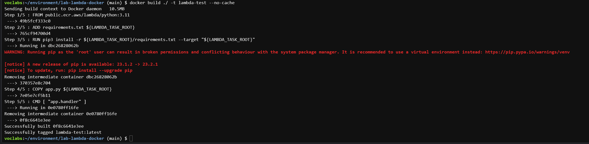
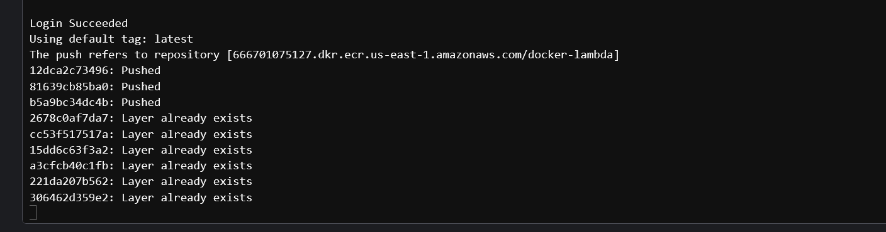

Docker
Part-1- Lambda
Lambda Basics
Lambda is a powerful tool to build serverless microfunctions in a variety of programming languages. These microfunctions can be triggered in a variety of ways, including time, text message, web traffic, or even voice commands. The execution of a Lambda can scale to meet the burst needs of users going to a website, or the number of rows of incoming data. There can be thousands of executions happening simultaneously. Lambda is billed by the millisecond (ms).
“Hello World” Lambda
Launch AWS Academy and get to the AWS Console. Find the Lambda service from the search bar. 
The dashboard shows the Lambda functions that have been made, some metrics on Lambda usage. Click on the orange Create Function button.
{kind=link}
Here you have to fill out the details for your Lambda function. There are several parts to set up.
You will leave the default option
Author from scratchso that you can code directly from the Lambda service.Set your
Function nameastest-lambda.Choose your
RuntimeasPython 3.11Click on the
Change default execution roledropdown, then selectUse an existing roleoption, and finally pick the existing roleLabRole.
{kind=link}
- Under
Advanced Settingscheck theEnable Function URLcheckbox and selectNonefor Auth type. This will create an HTTPS endpoint that you can access from your web browser orcURLcommand without authentication (in a real world scenario the authentication piece is usually handled by anAPI Gateway).
{kind=link}
- Now click on the orange
Create functionbutton.
You now have your environment for Lambda! In the upper function overview tab, you can select a variety of triggers and destinations for the Lambda. We will leave these alone for now. You can explore both on your own time to see the options.

Let’s start with the basic test of the “Hello World” code that was provided in the Python code. Click on the blue Test button.
{kind=link}
This will launch a popup to configure your event. You can submit a JSON payload to the test that will mimic input data that the Lambda function can process. Start off by setting Event name to mytest. Then you can leave the Event JSON for now, but you will come back to it for future iterations of experimentation. Click on the orange save button.

Click on the blue Test button again. If you click on the arrow then you can choose to change or make a new test environment like you did on the previous step.

Your test will execute, and the results will be shown. Several pieces of info are important:
- Name of the test that was conducted
- Response object that the function returned
- Function logs that include the duration of the function, billed direction, memory max (for pricing), and actual memory used
- Status in the upper right
{kind=link}
You are now ready to invoke your newly deployed Lambda function through your web browser or through cURL. Copy the function URL and paste it in your browser’s address bar.
{kind=link}
Now try invoking the Lambda from a cURL command (this requires cURL to be available on your machine).
{kind=link}
OPTIONAL - If you wanted to set your Lambda to run on a regular schedule, like a crontab, you would add a trigger with the Add trigger button in the Function Overview and select EventBridge (CloudWatch Events). The Trigger add would look like this for setting a job to run every day at 10:15am UTC.

Exploring the Lambda File System - LAB SUBMISSION COMPONENT
In this section, you will a make use of AWS Lambda to see how serverless infrastructure works. For this assignment, you will need to submit a set of JSON files along with other required files.
In AWS Lambda, for an output to be generated, you will may use json.dumps to dump a dictionary to the body value in the return statement. This is one of many methods you can use! We encourage you to experiment with few different methods and choose what works the best given your case. A screenshot is attached below for reference. Also note that indent=2 argument for json.dumps, it comes in handy for producting a pretty printed output.
A dictionary is basically defined as a key:value pair, this is also the building block of json format.
Each time you make a change to the code, you will have to click on the Deploy button and then the blue Test button.
Note the use of the
dictconstructor for creating the dictionary. This is an alternate, more readable (arguably slower though) way of creating a Python dictionary. Also note thatindent=2argument forjson.dumps, it comes in handy for producting a pretty printed output.
{kind=link}
- Use the
pathliblibrary and itsiterdir()method in Python to view the contents of the root directory (the/is referred to as therootdirectory). Make a new key in the Lambda calledrootin the return JSON and send the contents of the root directory. This might take a few tries! How do you deal with objects that need to become strings?
Hint!: Think how you can pass objects in a string? For this you can use something like this:
f'string here {object}'Return the contents of the event input variable to the lambda_handler function as additional item in the return JSON as
event.Return the python version using the
executable()method in thesyslibrary. The key should bepy_version.Return the current username using the
subprocesslibrary and thewhoamishell command. The key should beusername.Note that all the new keys you are adding to the response should be nested as part of the
body. So essentially, the response contains of two keys: astatusCodewhich specifies if the call successed or failed (a statusCode value other than 200 indicates a failure) and abodykey which has the contents of the response.
After these have been executed, copy the function URL and put it in lambda-test-url.json
The response from the server should be like this:
{ "statusCode": 200,
"body": {
"message": "Hello from Lambda!",
"root": "..."
"event": "...",
"py_version": "...",
"username": "..."
}
}Part-2- Cloud9
Cloud9 Setup
Follow these instructions step-by-step to setup your Cloud9 in AWS. The screenshots may look a bit different than what you are seeing, but the flow is the same.
Creating Cloud9 Environment
- Search for
cloud9in the search bar of your AWS console as shown in the figure below.

- Once on the Cloud9 splash screen, click on the orange button
Create environment.
{kind=link}
- Enter a Name for your environment. Leave the description blank. The figure below shows sample text you could use. Once you enter your name, scroll down to the next section.
{kind=link}
- There are a few options here. You have to make a few changes.
- The Instance type section is to select how large an instance for Cloud9. Select the
t3.smallinstance type - The Platform section is for selecting the operating system for your new instance. Leave as the default
- The Timeout option is set so your instance will hibernate after 30 minutes so you are not charged for the instance 24/7. This is a major problem for cloud services because you can run up a bill quite quickly! Leave as the default
- In Network Settings, Connection is how to connect to your instance. Select
Secure Shell (SSH) - Finally, click the orange button
Create
- The Instance type section is to select how large an instance for Cloud9. Select the
{kind=link}
- You will be sent to the environments page of the Cloud9 service. Your environment is now building. In the table below, for your environment (the row), click on the
Openbutton in Cloud9 IDE column. In the screenshot, we named itcloud9-env.

- The environment will be configured for you. This takes a few minutes.
{kind=link}
Once the environment setup screen goes away then you are ready to use Cloud9. If you get a warning message, just click “OK”.
Part-3- Docker-Lambda
Setting up Basic Docker Images in Cloud9
This lab will take a lot of time! You will need atleast 5-6 hours on average to work on this lab. Please make sure you start this assignment as soon as possible
Docker image building in Cloud9 is easy since the docker package is already set up. You just have to write some code and run Linux commands!
In Cloud9, start off by cloning your git repository from either the source control button on the lefthand sidebar or through the terminal.
In the root of your repository, create three empty text files in that folder called
Dockerfile,app.py, andrequirements.txt.The results should look like below and have the symbols change automatically:
- Open up the
Dockerfileand add the following text (note the # lines are comments just like python!)
# syntax=docker/dockerfile:1
# adapted from https://www.philschmid.de/aws-lambda-with-custom-docker-image
# https://docs.aws.amazon.com/lambda/latest/dg/python-image.html
FROM python:3.11-slim-buster
CMD ["python", "-c", "import platform; print(f\"version: {platform.python_version()}\")"]- Go to the terminal and change directories to the location of your Dockerfile. Run the command
docker build ./ -t test

- Run the command
docker run testto see if your Dockerfile worked!

Lambda Docker Image(Lab-Demonstration)
Note that this Dockerfile is invoking your requirements.txt file to install any packages from pip and the app.py lambda_handler function to run the python code.
Now you might think how does this
requirements.txtfile work? Each library which needs to be installed will be listed here. Think of Docker as a virtual environment where you can install any package you need and then you would list them in therequirements.txtfile. A small example of this is given in the following screenshot below. When the requirements.txt file has been changed, you will have to build and redeploy the docker image.

- Use the new Dockerfile contents below for your
Dockerfile.
A few examples of how to build a docker file along with some documentation is given below in this link: https://spacelift.io/blog/dockerfile. You can scroll down to see how a docker commands work and what they do. This will be useful in making this a relatively simple task.
# syntax=docker/dockerfile:1
# adapted from https://www.philschmid.de/aws-lambda-with-custom-docker-image
# https://docs.aws.amazon.com/lambda/latest/dg/python-image.html
FROM public.ecr.aws/lambda/python:3.11
##### copy requirements file and install necessary packages
# ***CODE TO DO***
# ADD the requirements.txt into the ${LAMBDA_TASK_ROOT} directory in the container
RUN pip3 install -r ${LAMBDA_TASK_ROOT}/requirements.txt --target "${LAMBDA_TASK_ROOT}"
##### Copy function code to docker container
# ***CODE TO DO***
# ADD the app.py file into the ${LAMBDA_TASK_ROOT} directory in the container
##### SET THE COMMAND OF THE CONTAINER FOR THE LAMBDA HANDLER
# app (name of py file)
# handler (name of function to execute for lambda job)
CMD [ "app.lambda_handler" ]Note that the ADD and COPY commands in Docker for this instance are similar. The ADD function is more advanced and can auto-extract compressed files into the image. Please use the given python version for this assignment. This assignment was mainly designed to be used with python 3.11. If you a version of python which is lower, we cannot say if it would be compatible.
Set up your python file
app.pywith a function calledlambda_handlerthat accepts theeventandcontextarguments. Wait, we have already done this in basic Lambda! Copy your function from the Lambda service. This will ensure that the response is the same through basic Lambda and through the Docker Lambda.Since you made changes to the Dockerfile and your app.py files, you need to build a new Docker image. Run the command
docker build ./ -t lambda-testso that you name the image something new.This has to be done every time you make changes to the
app.pyfile or theDockerfile.
The syntax of docker build is as follows:
docker build PATH -t 'CONTAINER NAME'
#Container name can be changed in this instance, but lambda-test is preferred.
# -t is a flag which tags the container with a name
# In the above command, ./ is the path where the container would be built.
# Can you recall where does ./ lead to?
Try running the command docker images to see the images you have in your local environment.

- “Running” the python script requires two steps because the Lambda container is built as a listening service that will execute when there is a payload provided to it.
The syntax of docker run is as follows:
docker run -p PORT CONTAINER NAME
#-p flag specifies which port needs to be used for the container to start running.
# CONTAINER NAME can be anything, we defined it to be lambda-test in this scenario.- Run the command
docker run -p 8080:8080 lambda-testto set up the service on your first terminal tab. This will run the service and listen for triggers. Next, click on the green plus icon and chooseNew Terminalto launch a new bash terminal.

- In this second terminal, run the command
curl -XPOST "http://localhost:8080/2015-03-31/functions/function/invocations" -d '{"payload":"hello world!"}'. This should return the same response as what you saw in the Lambda service. Also, go back to the first terminal tab to see the summary of execution message.
Lambda Yahoo Finance Exercise (LAB Submission-Part-2)
Python Setup
Return the price of any stock symbol that is submitted through the payload value for Lambda. For example, the goal is to get the DOW stock price if I run the command: http://localhost:8080/2015-03-31/functions/function/invocations" -d '{"payload":"DOW"}'
The url has to be dynamic based on the input stock symbol: https://finance.yahoo.com/quote/DOW
Use the requests and beautifulsoup packages to build the function. Note you will need to add these libraries to the
requirements.txtfile.Start your
app.pyfile with this start code.
import os
import json
import requests
import traceback
from bs4 import BeautifulSoup
url = f"https://finance.yahoo.com/quote/DOW"
# need headers to get pull from yahoo finance
header = {'Connection': 'keep-alive',
'Expires': '-1',
'Upgrade-Insecure-Requests': '1',
'User-Agent': 'Mozilla/5.0 (Windows NT 10.0; WOW64) \
AppleWebKit/537.36 (KHTML, like Gecko) Chrome/54.0.2840.99 Safari/537.36'
}
response = requests.get(url, headers=header)
soup = BeautifulSoup(response.text, "html.parser")
price = soup.find("fin-streamer", {'data-field':"regularMarketPrice", 'data-symbol' : stock.upper()}).text
print(f"price={price}")Coding Requirements:
- Add a try-except framework if any part of your code errors. Use the command
error=traceback.format_exc()to capture the error. What do you return when the function errors instead? - Ensure that if your function does not receive an input or if it receives an invalid stock ticker that it returns a 404 status code. For no input use the message
"No stock provided"and for an invalid ticker choose"Invalid stock provided" - Make the url dynamic to the input stock symbol specified
- Integrate your code into the Lambda framework - event input and response output
- Ensure the response object for a successful request looks like
{"statusCode" : 200, "body" : {"stock" : "A", "price" : "#####"}}.
Please use indent = 2 when dumping the response to make sure the response is easily readable
Hint #1: Try developing using the python console in Cloud9 before integrating into your app.py file. You don’t want to have to build a Docker image every code change, right?
- This process is mainly only for prototyping. You would do this by writing the entire python code first in app.py file, then running the following command in the terminal :
python app.py --payload {'payload': 'stock'}Hint #2: Once you put the code into the Lambda framework, you will have to build and run to complete a development integration.
Hint #3: Implement a basic logger function to see where you might be going wrong? is ther a certain way to pass an input string to the event handler function? Try printing the event out to the console.
Use the following test inputs to confirm your function can handle all the errors gracefully: APPL, AAPL, appl, DOW, dow. Unknown tickers need to be handled and case of the ticker should not matter.
Submit the bash history where this function is implemented in the file
lambda-local-test.txt.Once your code is ready to go with Lambda, add, commit, and push the files (app.py, Dockerfile, requirements.txt) to GitHub.
Deploying Docker Container as a Lambda Function
Posting Docker Image to ECR
ECR stands for Elastic Container Registry.
Run the command
aws ecr create-repository --repository-name docker-lambdato make a new repo in the elastic container registry to store your new containers.Run the commands to grab info on your AWS account and region.
aws_region=$(aws configure get region) aws_account_id=$(aws sts get-caller-identity --query 'Account' --output text)Run the following command to configure your authentication to talk to the ECR service. Note how we use BASH variable with the
$so that you don’t have to manually enter your region or account id.aws ecr get-login-password \ --region $aws_region \ | docker login \ --username AWS \ --password-stdin $aws_account_id.dkr.ecr.$aws_region.amazonaws.comTag the image in the ECR registry by running the command
docker tag lambda-docker-build $aws_account_id.dkr.ecr.$aws_region.amazonaws.com/docker-lambda- The final
docker-lambdais referring to the new repository you just built a few commands ago.
- The final
Push the image to docker by running the command
docker push $aws_account_id.dkr.ecr.$aws_region.amazonaws.com/docker-lambda

Read more about pushing a Docker image to ECR here.
Docker Setup in Lambda
Go back to the Lambda dashboard by going to this link. Make a new function by clicking on the orange Create function button.
You must select the
Container imageoption that is the third item on the top row of options for Lambda.Name your function
container-testSet your
Execution rolelike we did earlier so that you useLabRoleClick on the
Browse imagesbutton to find the container you just uploaded!
- A popup will launch and you have to select the repository (“docker lambda”) and then your image, which will be called “latest” by default. Click on the orange
Select imagebutton.

Now you see the same overview page for the Lambda. Since this is a container image and not simple code, we cannot actually preview anything. Just click on the Test tab.

Set a name for your test aapl-test and change the event JSON to look like {"payload" : "AAPL"}. Once you are satisfied, click on the Save button and then the orange Test button.
The result of your test will be shown in a green box, and just click on the Details arrow to see the summary. Note that the stock price came back successfully. The billed duration in the example is 2578 ms, with “Init duration” contributing 709.68 ms and the code execution contributing 1867.85 ms. The results are rounded to the nearest millisecond, but are calculated at the 10 microsecond level, WOW!
Set up Function URL for a REST API
Let’s get the REST API up and running for your Lambda function so that you could call this function with other scripts! Go to the Configuration tab, then the Function URL section, then click Create function URL.
Select NONE as the authentication type. This ensures that anyone with your URL can query the API without security issues. Note this is VERY bad practice if you are in the real world and putting this into production!
Take the Function URL on this page and use as the url for your new REST API. Confirm it work by running it in your browser. It may not work as intended becuase you didn’t provide the Lambda function with an input.
Run the following command in Cloud9 to confirm that you are able to query the Function URL properly curl -X POST [YOUR-FUNCTION-URL] -d '{"payload" : "goog"}' --header "Content-Type: application/json".
** Submit the Lambda URL in lambda-docker-url.json file. Make sure that if a payload is given from the local terminal in your laptop, the lambda function returns the intended result.**
EXTRA CREDIT - 5% bonus. Modify your app.py to accept multiple stocks like {“payload” : “AAPL,DOW,MSFT”} as an input and create a new lambda function. Provide an extra file in your repo named bonus-test-url.json of your test. It should return with the given input like the following result below:
{"statusCode" : 200,
"body" : [{"stock" : "A", "price" : "#####"}, {"stock" : "B", "price" : "#####"}]
}Make sure you git add, commit, and push all your work on your container!
Run Unit Tests of your REST API
Launch Sage Maker Studio, clone your Git repo, and run the jupyter notebook lambda-api-testing.ipynb. DO NOT change any of the cells. This will create a new file called lambda-test.json.